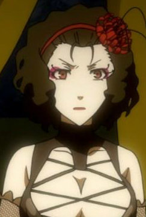
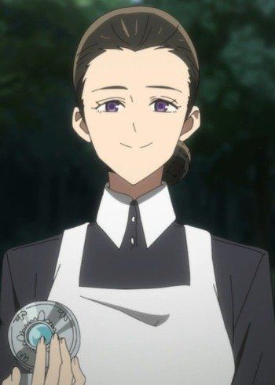
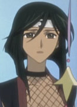

|
Angelica Barley |
- The Ancient Magus' Bride: Those Awaiting a Star
- The Ancient Magus' Bride
|
Angelica Barley is an acquaintance of Elias Ainsworth. She is a mage who mostly works with minerals such as gems and crystals. She is wife to David Barley and mother of Althea Barley. |
|  |
Beast |
- Black Butler: Book of Circus
|
Beast is an animal tamer at Noah's Ark Circus. She is a very domineering, aggressive and ill-tempered individual. She will whip at anyone when she irritated. She loves and cares deeply for Joker. |
|  |
Isabella |
|
Isabella is the caretaker in Grace Field House, taking care of the orphans that resides within. She appaers as a loving and affectionate mother towards the children, but has a twisted nature. Once an optimistic, free-spirited, and fun-loving little girl, Isabella is now a sharp-witted, ruthless, cold and manipulative. She is able to put a motherly, selfless, and kind-hearted persona around the orphans she raise. She can switch between a loving mother and threat of violence. A few of Isabella's traits are her cunning, dominance, and intelligence. She is one of the Tops Mamas of the farms. |
 |
Queen of Mirage Kingdom |
- Pokemon Advanced Generations
|
Queen of Mirage Kingdom is the one of the rulers of Mirage Kingdom and Princess Sara's mother. |
|  |
Souma |
- Tsubasa Chronicle
- Tsubasa Chronicle 2nd Series
|
Souma is Princess Tomoyo's boduguard and a ninja of Nihon Country. She is very loyal and protective to her leader. She is pair with Ryuuou in an alternative dimension. |
 |
Tamako Yukihira |
- Food Wars! The Fifth Plate
|
Tamako Yukihira is the late wife of Joichiro Yukihira and the mother of Soma Yukihira. Like Some, Tamako was an optimistic, cheerful and sociable woman who makes her quite popular. Despite her terrible cooking, she never let her failure bring her down. She was about to come up with ideas which could not thought of. |